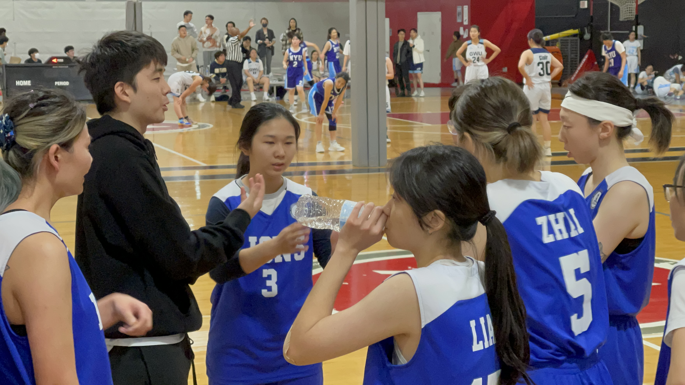
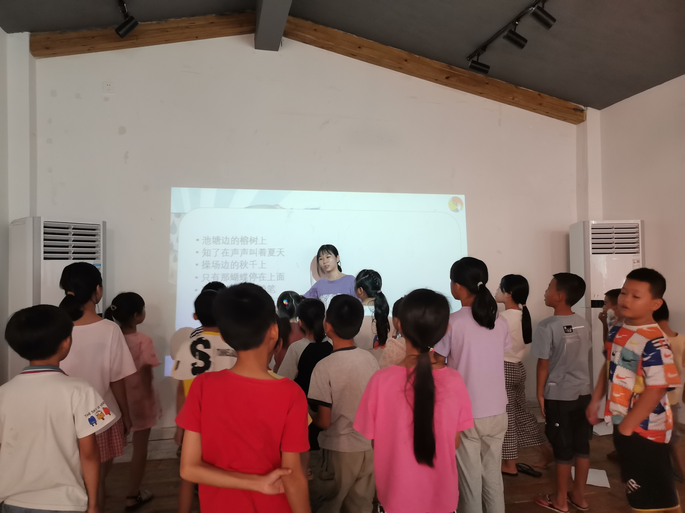
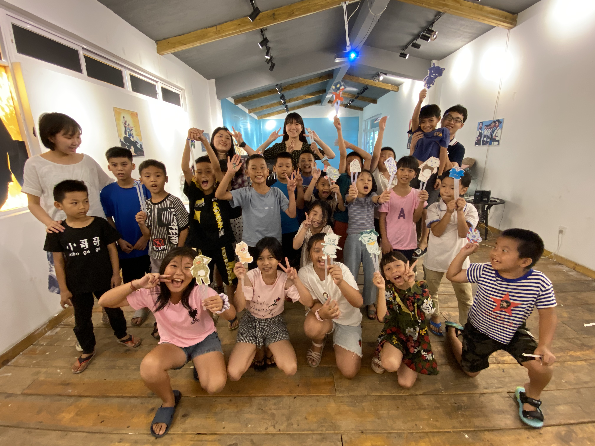

Extracurricular
Before I came to Pennsylvania, violin is the most essential part in my spare time. I played violin in symphonies orchestra for almost 10 years. Violin accompanied me during my childhood and adolescence. However, when I came to Pennsylvania in 2019, I was attracted by the sports atmosphere, such as football, basketball, Frisbee, etc., so I started to get in touch with basketball. Team sports fascinated me. I not only practiced in my spare time but also enrolled in basketball electives curriculums. Later, I joined the Chinese women's basketball team and participated in many basketball games inside and outside the school.
Type here
Violin
Sibelius Violin Concerto Minor D
Basketball
SheGotBucket woman basketball game, among nine schools in East American.

Game break, Coach is talking about strategic
Non-profit Organization
Qiaomu Growth Education NPO

1. We set up a non-profit education operation, and make it legal in local government.
2. We absorb our members, who have the same permission as us, to help rural students.
3. Build a good relationship with international volunteer associations.
4. Collect more than ¥20000 to help rural students.
5. Teach, accompany more than 100 students in two non-profit education camps.